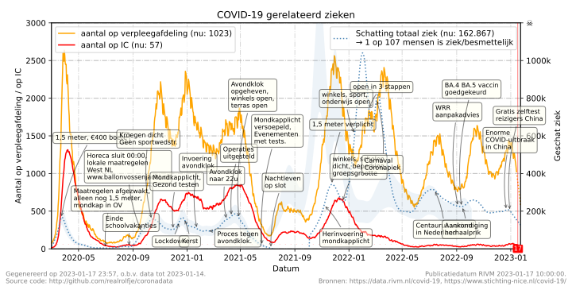
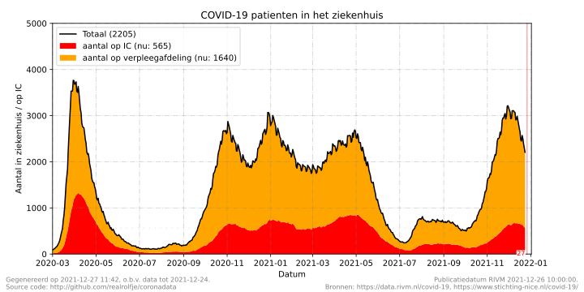
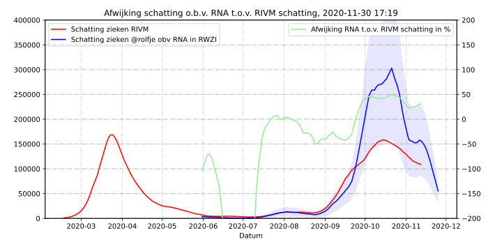

Geen smoesjes, je weet het best:
Houd afstand, werk thuis, was je handen, vermijd drukke plaatsen.
 De COVID-19 gerelateerd ziek/besmettelijk grafiek laat zien hoeveel mensen er in Nederland geschat ziek of besmettelijk zijn als gevolg van het COVID-19 virus, en hoeveel mensen in het ziekenhuis danwel op een intensive care bed liggen. Belangrijke datums en gebeurtenissen zijn opgenomen als tekstbalonnen, dit is een selectie uit een lijst met belangrijke gebeurtenissen met bronvermelding. De verschillende grafieken worden als volgt opgebouwd:
aantal op verpleegafdeling (nu:1006)
Het aantal mensen in een ziekenhuis op een verpleegafdeling met, of als gevolg van, een
COVID-19 besmetting zoals gerapporteerd door Stichting NICE.
aantal op IC (nu:52)
Het aantal mensen dat op een intensive care afdeling is opgenomen met, of als
gevolg van, een COVID-19 besmetting zoals gerapporteerd door Stichting NICE.
Totaal liggen er 1058 mensen in het ziekenhuis.

In de grafiek op de hoofdpagina zijn de getallen niet bijelkaar opgeteld. Zodra
iemand van de verpleegafdeling overgeplaatst wordt naar de IC afdeling dan telt die persoon dus
niet meer mee op de verpleegafdeling.
Voor de duidelijkheid vindt u hiernaast een "gestapelde" grafiek, waarbij het totaal aantal
mensen in het ziekenhuis (dus op de verpleegafdeling of op de IC) inzichtelijk is gemaakt.
In totaal zijn er nu dus
1006 + 52 = 1058
COVID-19 patienten
in het ziekenhuis.
Schatting totaal mensen ziek op basis van tests en RNA in rioolwater (nu: 258.888)
Omdat de rioolwaterdata nogal grillig verloopt, met name na de invoering van nieuwe
meetmethodes bij de rioolwaterzuiveringsinstallaties is de schatting van het aantal
zieken iets aangepast. De huidige schatting grafiek is gebaseerd op zowel rioolwaterdata
als COVID testuitslagen en percentages.
 Ook al wordt er een hoop gemeten, het schatten van het aantal zieke mensen in Nederland is lastig omdat niet iedereen zich altijd laat testen, rioolwater gegevens erg veel ruis bevatten, en ziekenhuisopnames niet alleen achterlopen, maar ook nog eens beinvloed worden door de kwaliteit van de zorg. Zo worden er nu minder mensen opgenomen in het ziekenhuis omdat al eerder de juiste zorg kan worden geboden. Daardoor lijkt het aantal zieke mensen laag, maar in werkelijkheid is het aantal zieken juist hoger en er komt een kleiner percentage van die zieke mensen in het ziekenhuis terecht.
Vanaf 9 juli 2021 maakt het RIVM voorlopig geen berekening meer van het aantal besmettelijke mensen. Dit cijfer is gebaseerd op het aantal ziekenhuisopnames. Er zijn steeds meer mensen gevaccineerd en daardoor worden minder mensen in het ziekenhuis opgenomen. Het verschil tussen het aantal besmettingen onder de mensen en het aantal ziekenhuisopnames wordt steeds groter. Daarom wordt het aantal besmettelijke personen niet meer berekend door het RIVM. Vanaf dat moment kunnen de schattingen op deze site daarop niet meer worden ge-ijkt.
De huidige schattingsmethode is empirisch vastgesteld en bestaat uit de volgende gegevens: \[ \textrm{Ziek}_\textrm{geschat} = { { ( 10^4 \times \textrm{test}_\textrm{percentage} + 3 \times \textrm{test}_\textrm{totaal} + 22 \times \textrm{test}_\textrm{positief}) \times \log(\textrm{RNA}_\textrm{deeltjes}) } \over 44 } \]